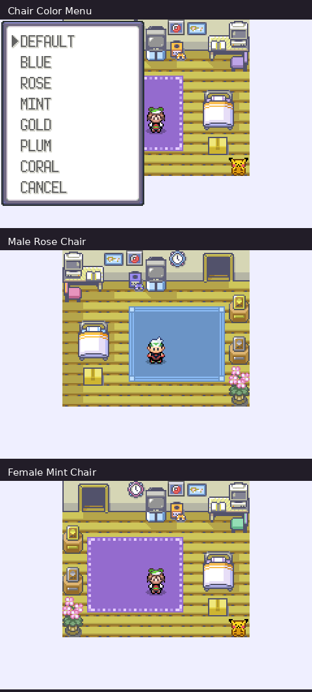

YOUR BEDROOM PC · DECORATION
A room that grows with your adventure
Return home as your journey unfolds. Mom's flowers appear after your first Hoenn badge, a silver award after Norman, and a gold award after the Hall of Fame. Your first filed Wing Survey report adds the Ball Poster beside the original wall map. Your notebook and Mom remember later research, visiting Gyms and the current Kanto finale.
Three separate color choices
Use your bedroom PC → DECORATION, then select RUG COLOR, BED COLOR or CHAIR COLOR. Each offers Default, Blue, Rose, Mint, Gold, Plum and Coral. Press A to apply a choice, or B/Cancel to leave it alone. The chair keeps its original shape. Default restores that material's original colors. Save your game to keep your choices.
More room to decorate
The rug extends toward the bed. Your existing dolls and cushions can also go on free wood floor. Placement protects furniture, existing decorations and routes to the PC, clock, notebook, wardrobe and stairs. Existing saved dolls stay where you placed them; an overlapping new keepsake waits rather than displacing a doll.
Your wardrobe and other established furniture still work as before. Decoration controls remain at the bedroom PC. Secret Base decoration keeps its existing behavior.


Continuing an existing adventure
Existing Legends battery saves can continue. Earned keepsakes appear from your existing progress; new color choices begin at Default. Keep a backup of your in-game save when updating, and use the same save with your newly patched ROM.